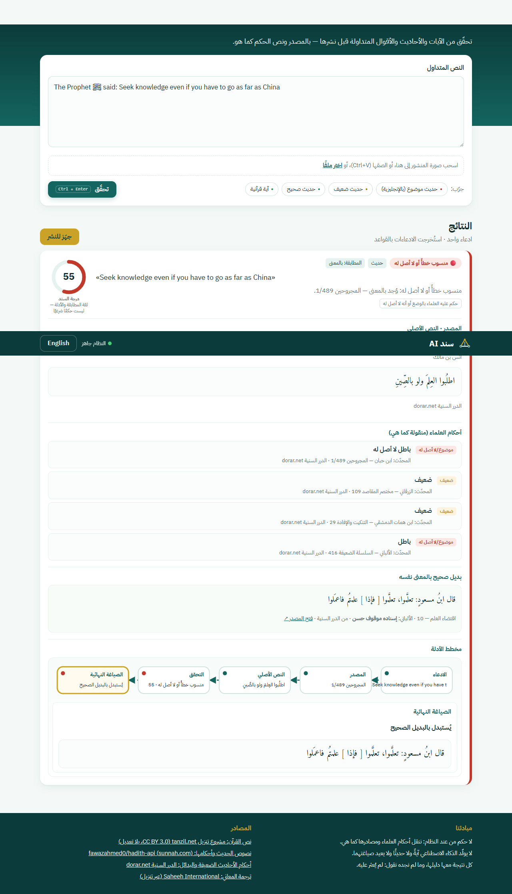
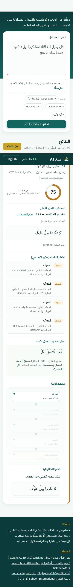
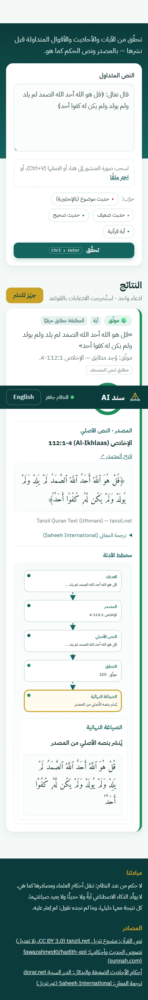
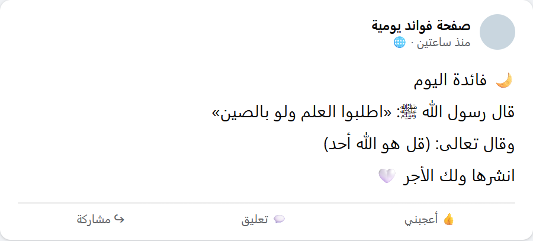

تحقّق قبل أن تنشر
أداة ذكية تمكّن الدعاة وصنّاع المحتوى الإسلامي من التحقق من الآيات والأحاديث والأقوال المتداولة قبل نشرها: تجد النص الأصلي في المصادر الموثوقة، وتنقل أحكام العلماء كما هي، وتقترح البديل الصحيح، وتجهّز المنشور للنشر بالنصوص الأصلية حرفيًا مع التوثيق — دون أن يُصدر النظام حكمًا من عنده.
| التحدي | تحدي الذكاء الاصطناعي في خدمة المحتوى الإسلامي |
| المسار | أدوات المعرفة والتحقق لتمكين المعرّفين بالإسلام |
| مقدّم الفكرة | أحمد أبايزيد مساعد (مشاركة فردية) |
| النسخة التجريبية | https://sanadai-zl6q.onrender.com |
| الكود المصدري | https://github.com/githubsud/sanadai |
تنتشر على منصات التواصل يوميًا منشورات تبدأ بـ«قال رسول الله ﷺ» أو تنقل آيات بألفاظ محرّفة، وكثير منها أحاديث ضعيفة أو موضوعة أو أقوال لا أصل لها نُسبت إلى النبي ﷺ. ويعيد الدعاة وصنّاع المحتوى نشرها بحسن نية لأن التحقق يدويًا يتطلب: البحث في كتب متعددة، ومعرفة أحكام العلماء، ومقارنة الألفاظ — وهو ما لا يتوفر له الوقت أو الأداة المناسبة.
يلصق المستخدم نص المنشور — أو صورة له — بالعربية أو الإنجليزية، فيقوم سند AI بما يلي:
لا حكم من عند النظام: كل حكم منقول من مصدره باسم قائله، والدرجة مقياس لثقة المطابقة والأدلة لا حكمٌ شرعي.
لا يولّد الذكاء الاصطناعي آيةً ولا حديثًا: دوره مقصور على استخراج الادعاءات وقراءة الصور، ويُرفض آليًا أي نص يخرجه النموذج إن لم يكن موجودًا حرفيًا في منشور المستخدم.
كل نتيجة معها دليلها: وما لم يُعثر عليه يُقال فيه «لم يُعثر عليه في المصادر المعتمدة». ونص القرآن يُعرض حرفيًا من مشروع تنزيل دون أي تعديل.
يمر كل ادعاء بخطوات مسجّلة بتوقيتها (Evidence Trace)، فيرى المستخدم كيف وصل النظام إلى النتيجة ومن أي مصدر. ويعمل البحث الحرفي أولًا (أغلب المنشورات تنقل النص كما هو) فتظهر النتيجة في أقل من ثانية، ولا تُستدعى النماذج الدلالية إلا عند الحاجة إلى المطابقة بالمعنى أو عبر اللغتين.
| المصدر | المحتوى | الاستخدام |
|---|---|---|
| مشروع تنزيل (tanzil.net) | نص المصحف بالرسم العثماني والإملائي — 6,236 آية | عرض الآيات حرفيًا ومطابقتها |
| مجموعات الحديث المفتوحة | 50,703 حديثًا من 17 كتابًا (الكتب التسعة، رياض الصالحين، الأدب المفرد، بلوغ المرام، المشكاة…) بالعربية والإنجليزية، و82 ألف حكم بأسماء المحدّثين | إيجاد الأصل والرقم والحكم |
| الدرر السنية (dorar.net) | أحكام المحدّثين على الأحاديث المتداولة، و«الصحيح البديل» | الضعيف والموضوع والبدائل |
| المكوّن | التقنية |
|---|---|
| الخادم | Python · FastAPI · Pydantic |
| البحث النصي | SQLite FTS5 (BM25) مع تطبيع عربي (إزالة التشكيل وتوحيد الحروف) |
| البحث الدلالي | BAAI bge-m3 · إعادة الترتيب bge-reranker-v2-m3 · دمج النتائج (RRF) · ChromaDB |
| استخراج الادعاءات وقراءة الصور | Gemini أو Claude بمخرجات JSON مقيّدة بمخطط، مع مستخرج بالقواعد عند التعذّر |
| الواجهة | HTML/CSS/JavaScript، عربية أولًا مع الإنجليزية، ومخطط أدلة بـSVG |
قُيّم النظام على 120 حالة اختبار مبنية آليًا من المصادر نفسها (أحاديث صحيحة بصيغ مختلفة، وأحاديث ضعيفة وموضوعة متداولة، وآيات بعضها بلفظ مغيَّر عمدًا، وأمثال شائعة منسوبة خطأً إلى النبي ﷺ):
| المقياس | النتيجة |
|---|---|
| الوصول إلى المصدر الصحيح ضمن أفضل 5 نتائج (المستهدف ≥ 90%) | 98% |
| المصدر الأول هو الصحيح | 98% |
| دقة الإشارة الضوئية (موثّق / مراجعة / لا أصل له) | 99.2% |
| استخراج الادعاءات | 100% |
| نصوص ضعيفة أو موضوعة عُرضت خطأً على أنها موثّقة | 0 |
الحالة الوحيدة المختلفة عن المتوقع جاءت في الاتجاه الحذر (مراجعة بدل «لا أصل له»). التقرير الكامل وطريقة القياس في المستودع: docs/EVALUATION.md.




| المستفيد | الأثر |
|---|---|
| الدعاة والمعرّفون بالإسلام | نشر محتوى موثّق بالنص الأصلي ومصدره، وتجنّب نسبة ما لا يصح إلى النبي ﷺ. |
| صنّاع المحتوى ومديرو الصفحات | التحقق في ثوانٍ بدل البحث اليدوي، ومنشور جاهز للنشر بالتوثيق. |
| عامة المستخدمين | نشر ثقافة التثبت قبل المشاركة، وأداة بسيطة للتحقق من منشورات واتساب ووسائل التواصل. |
| المسلمون الجدد وغير المسلمين | وصول إلى النصوص الصحيحة مع ترجمة معانيها بالإنجليزية. |
الحالة: نموذج أولي يعمل بالكامل ومنشور على الإنترنت، مع الكود المصدري و181 اختبارًا آليًا.
التطوير المقترح: مراجعة علمية لقوائم الاختبار والأحاديث المتداولة من متخصصين؛ توسيع قاعدة الأحاديث الضعيفة المتداولة؛ إضافة لغات أخرى (الأردية، الإندونيسية، الفرنسية)؛ إضافة للمتصفح وبوت واتساب للتحقق من داخل المحادثة؛ واستضافة أقوى لتشغيل البحث الدلالي كاملًا في النسخة العامة.